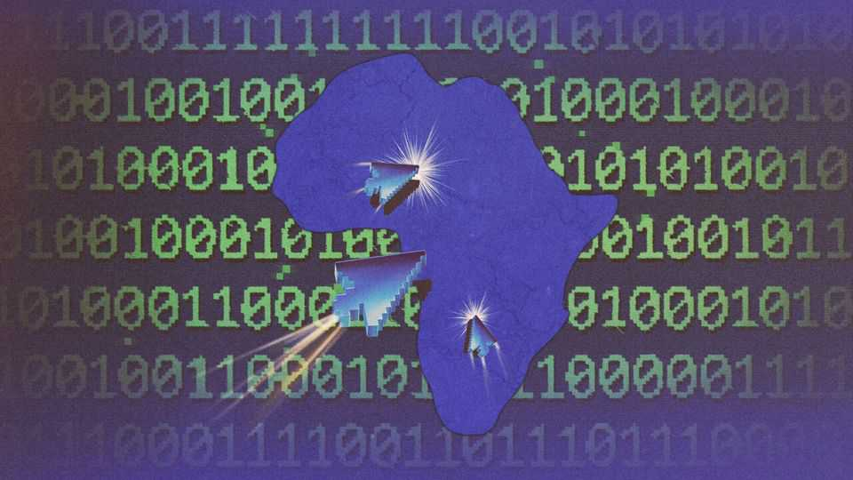

Hackers are exploiting Africa’s digital identities
Governments are embracing new databases. So are criminals

Nov 5th 2026
EARLIER THIS year hackers targeted Senegal’s agency for issuing passports and identity cards. The attackers claim to have stolen sensitive data from the west African country, including biometric information and immigration records. The authorities told citizens that their data were safe. But some of the loot seemingly ended up on the dark web. It was not the only successful recent cyber-attack on the state. In May, criminals targeted the national treasury. Last year hackers demanded a ransom of $10m after breaching the tax authority.
Senegal is not alone. As African governments digitise government services and grow their national-identity databases, they are struggling to protect citizens’ data. Incidents such as the recent discovery of a vulnerability in PHP, a programming language commonly used by governments, show that the problem is not limited to Africa. But the continent has less money and talent to bolster its cyber-security. And as artificial intelligence (AI) expands attackers’ toolkits, African governments will urgently need to find ways to secure their systems.
Their problems often stem from efforts to improve public services. Of the 800m people worldwide who have no legal proof of who they are, more than half live in sub-Saharan Africa. Without a formal identity many find it impossible to join welfare programmes or health-insurance schemes, send children to school, own land, open bank accounts or activate sim cards. Countries like Uganda, where almost 80% of people have a digital ID, can now more easily track their people and close gaps in provision. (Around a decade ago fewer than 10% of Ugandans had some legal proof of their identities.) A digitally savvy state is better equipped to spot fraud, collect taxes and safeguard elections.
Yet governments are failing to secure the growing number of access points for hackers. That is mainly because there are not enough qualified people who can help them do it. Mastercard, the payments firm, reckons that Africa has 200,000 unfilled cyber-security jobs, equivalent to about a quarter of the current workforce. Banking and telecommunications firms snap up the few qualified engineers and security analysts. As ai accelerates, Africa’s skills gap is widening.
Money is another problem. According to a survey by Interpol, nearly all African members cited “resource constraints” as an obstacle to improving cyber-security. Protecting databases is expensive. Software is often installed and managed by foreign firms because there are too few qualified local engineers. Importing these services uses scarce foreign currency. Computers need reliable power, which many African grids do not provide.
Some countries are trying to bolster their defences. In Ghana, firms must report major breaches to the Cyber Security Authority within a day of spotting them or risk fines or the imprisonment of bosses. Kenya has an incident-response centre that regularly publishes reports on cyber threats. But other countries are lagging behind. Only 16 on the continent have ratified the African Union’s Malabo Convention, which is supposed to encourage pan-African digital standards.
In the short term, governments are trying to encourage citizens to be more careful. Ghana’s “Be cyber smart” campaign urges people to protect their passwords, avoid dodgy links and keep private information private. Rosemary Kisembo, who runs Uganda’s identity register, says that “people share more about themselves on Facebook” than with the government, a sign she takes as Ugandans’ lax approach to data security.
The gaps in funding and skills are difficult to close. Wide variation in connectivity, compute capacity and digital literacy among African countries hinders collaboration. But governments could do more to work together. Sharing intelligence about attacks could help them anticipate vulnerabilities. But weak supranational institutions—and national pride—have hampered efforts.
Some countries deny there is an issue. Nigeria’s identity-management body, for example, still claims that its database was not compromised, even though journalists have found national-identification numbers for sale on the black market since 2024. It is hard to solve the problem unless it is identified first. ■
Sign up to the Analysing Africa, a weekly newsletter that keeps you in the loop about the world’s youngest—and least understood—continent.